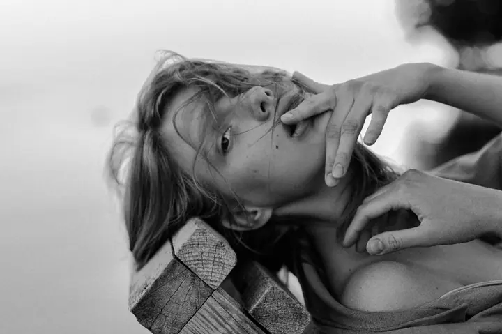
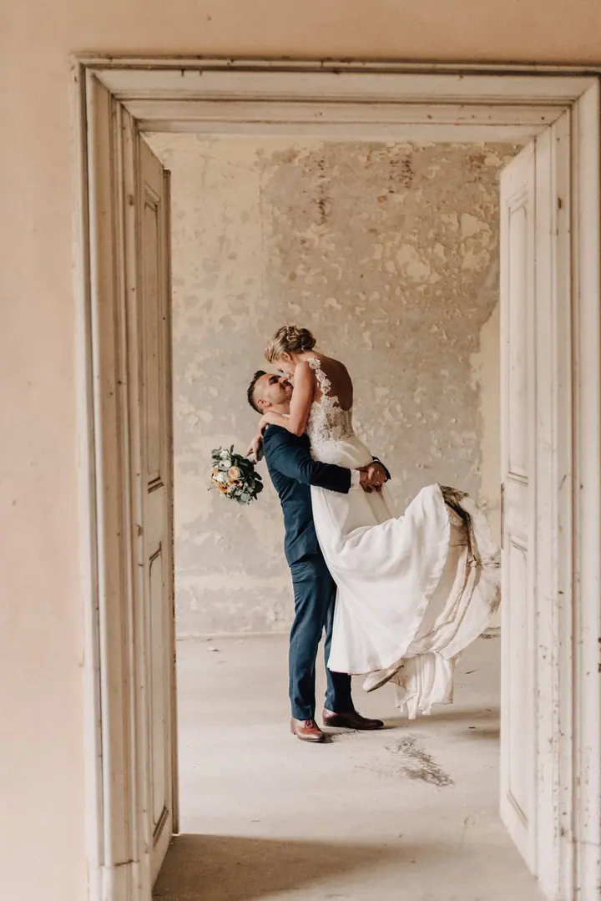

Párové a svatební focení
Portréty dvou lidí v přirozené blízkosti, kde vzniká autenticita, dotek a přítomnost. Stejně citlivě fotím i svatební den.

Portrétní, intimní a brand fotografka
Jmenuji se Radka Pipotová a jsem portrétní a brand fotografka v Praze a okolí Dobříše. Fotím ženy, muže, páry i osobní značky podnikatelů a podnikatelek. Nehledám dokonalost, hledám přítomnost a světlo, které z vás vyzařuje.
Zeptat se na termín
Portréty dvou lidí v přirozené blízkosti, kde vzniká autenticita, dotek a přítomnost. Stejně citlivě fotím i svatební den.
Po vysoké umělecké škole jsem pracovala pro velká vydavatelství jako fotoprodukční a obrazová redaktorka. Práce mě bavila, ale vzala mi chuť tvořit. V roce 2016 jsem udělala nejlepší rozhodnutí svého života a začala se fotografii věnovat naplno. K focení jsem se přitom dostala od malování, protože jsem chtěla zachytit okamžik rychleji.
Ve své tvorbě pracuji s intimitou, autenticitou a přirozenou přítomností člověka. Mezi mé autorské projekty patří Křehké bytosti a Vodní boudoir, kde se propojuje ženskost, klid a síla okamžiku. Při focení bývá uvolněná atmosféra a jsme na přátelské vlně. Hodně se nechávám inspirovat až na místě, vaší osobností a prostředím, které spolu vybereme.
Působím také jako lektorka ve FotoŠkoda a pro Sony a vedu vzdělávací sérii pro fotografy a tvůrce POZDĚ. Lidem předávám přístup k fotografii, který stojí na vnímání člověka, ne jen na technice.

Vše spolu probereme a ujasníme si, v jakém duchu chcete fotky mít. Ráda vám poradím i s výběrem místa.
Stačí lehké sjednocení pleti a denní líčení, které většinou zvládnete sama. Když budete chtít, dám vám kontakt na vizážistku, se kterou spolupracuji.
Fotíme u vás doma, venku, ve vaší oblíbené kavárně nebo třeba u moře. Focení probíhá v klidné a přátelské atmosféře, abyste se cítili bezpečně.
Z focení vyberu a citlivě upravím fotografie, na kterých se uvidíte pravdivě. Odnesete si nejen fotky, ale i zážitek.
Vůbec ne. Fotografie u mě nevznikají z pózy, ale z pocitu. Většina klientek po pár minutách zjistí, že se bát nemusela.
Fotím v Praze, Dobříši, Dobřichovicích a ve Středočeském kraji, ale klidně i jinde. Můžeme fotit u vás doma, venku, v oblíbené kavárně nebo u moře.
Kolekce Taková jsem já stojí 9 000 Kč a obsahuje 10 fotografií. Ceny dalších kolekcí vám ráda pošlu.
Ano, nabízím dárkové poukazy na focení. Stačí se mi ozvat a domluvíme podrobnosti.